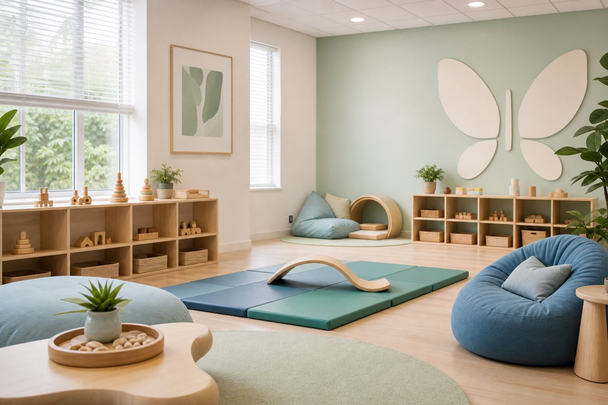

Center-Based ABA Therapy
Center-Based ABA Therapy
At Bloompath, our centers are designed to feel open, joyful, and full of discovery. Every space—from sensory areas to creative corners—is thoughtfully arranged to help children learn through play, movement, and imagination. With the guidance of our Board-Certified Behavior Analysts (BCBAs) and trained therapists, children build communication, problem-solving, and social confidence in a setting that feels natural and inspiring.
Here, learning happens through laughter, and progress grows out of connection.
Best for families looking for structured therapy, peer interaction, play-based learning, and a supportive environment designed specifically for child development.
- Structured learning environment
- Opportunities for social interaction
- Play-based skill development